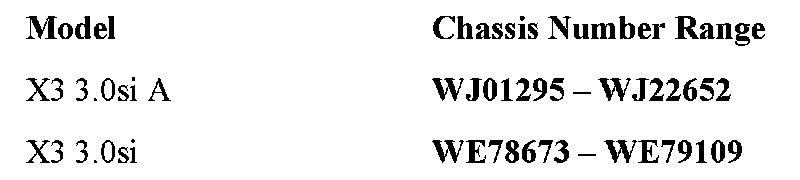
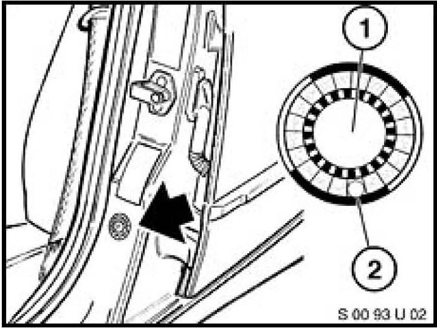
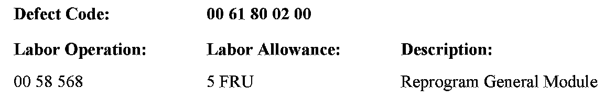

Campaign - Reprogram General Module
SI B61 17 08General Electrical Systems
November 2008
Technical Service
PERFORM THE PROCEDURE OUTLINED IN THIS SERVICE INFORMATION ON ALL AFFECTED VEHICLES THE NEXT TIME THEY ARE IN THE SHOP FOR MAINTENANCE OR REPAIRS AND PRIOR TO RETAIL DELIVERY.
SUBJECT
Service Action: Reprogram General Module
MODEL
E83 (X3)
SITUATION
A software error may result in the continuous activation of the servomotors in the locks, resulting in individual lock actuator failure or fuel filler lock failure.
AFFECTED VEHICLES
This Service Action involves E83 (X3) vehicles, which were produced from September 2, 2007 to June 6, 2008.
In order to determine whether a specific vehicle is affected by this Service Action, it will be necessary to utilize the "Service Menu" of the DCS (Dealer Communication System) or the Key Reader. Based on the response of the system, either proceed with the corrective action or take no further action.

The chassis number ranges listed are only for informational purposes, and are not to be considered as the only deciding factor.
PROCEDURE
As a prerequisite, the BMW diagnosis equipment must be loaded with DIS V55 updated with DIS-UPDATE V23.3 (released as an online update November 5, 2008) or later.
NOTES:
The error in the software is corrected not by programming but by carrying out the test module. During the software update, the following points must be followed:
- Do not switch off the ignition, and do not perform any operations on the vehicle, e.g., open/close doors, etc.
- Do not disconnect the interface from the vehicle.
- Do not end or cancel the diagnostic session before it is finished.
1. Connect the diagnostic system and power supply to the vehicle.
2. Carry out a quick test.
3. Select "Function selection / Service functions / Body / Central Locking / Service Action, General Module 5". Then press the "Test Plan" button to start the test plan "S6100_GM5AKTION".
4. Run the test module until "End of test module" is displayed. Reprogramming will take approximately 10 minutes.
LABEL INSTRUCTIONS
This Service Action has been assigned code number 535. After the vehicle has been checked and corrected, if necessary, obtain a label (SD 92-352) and:
A. Emboss your BMW center warranty number in the middle of the label (1);
B. Punch out code number 535 (2) printed on the label; and

c. Affix the label to the B-pillar as shown.
If the vehicle already has a label from a previous Service Action/Recall Campaign, affix the new label next to the old one. Do not affix one label on top of another one, because a number from an underlying label could appear in the punched-out hole of the new label.

WARRANTY INFORMATION
Covered under the terms of the BMW New Vehicle Limited Warranty.

Disclaimer